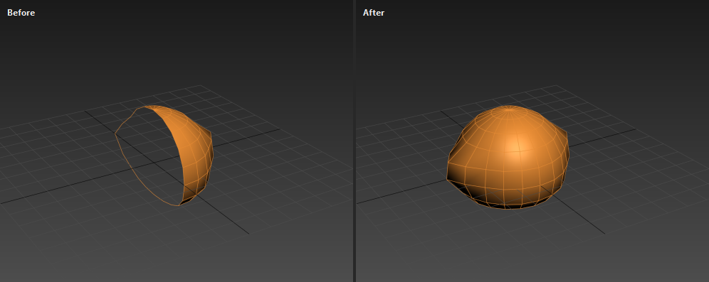
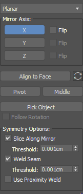

Tools / Symmetry 9000
Symmetry 9000
A live mirror modifier, a drop-in replacement for Max's Symmetry.
What it does
Symmetry 9000 is a modifier that mirrors geometry across a plane, or repeats it round an axis. It replaces Max's own Symmetry modifier and adds control over which faces are mirrored and how smoothing, materials and UVs come out. Add it from the modifier list, or use the Mirror tool, which adds it for you already set up.


How to use it
- Select an object and add Symmetry 9000 from the modifier list (category 9000 Toolkit), or use the Mirror tool.
- Choose Planar or Radial at the top of the panel.
- Switch on an axis (X, Y or Z). Edit the source side and the other side follows.
- To move the mirror plane, use the Mirror sub-object level and move or rotate the gizmo, or use the buttons in the panel.
Options
Symmetry rollout
| Option | What it does |
|---|---|
| Planar / Radial | Planar mirrors across a plane. Radial repeats the geometry round an axis. |
| X, Y, Z | Switch on one or more axes. More than one gives 4-way or 8-way symmetry. Each axis has a Flip box to mirror the other way. |
| Radial: Count | How many copies go round the axis. |
| Radial: Mirror Symmetry / Flip | Also mirrors each copy, so you model a half wedge and get a full symmetric repeat. |
| Align to Face | Click a face in the viewport and the mirror plane snaps to it. The small button beside it resets the plane. |
| Pivot / Middle | Puts the centre on the object's pivot, or on the middle of its bounding box. |
| Pick Object | Click another object to use its pivot as the centre. The mirror follows it when it moves. |
| Follow Rotation | With Pick Object, the plane also follows the other object's rotation. |
| Slice Along Mirror | Cuts the mesh along the mirror plane. Has its own Threshold. |
| Weld Seam | Welds the vertices on the seam. Has its own Threshold. |
| Use Proximity Weld | Welds nearby vertices of the two sides. |
Selection rollout
| Option | What it does |
|---|---|
| All | Mirrors the whole mesh (default). |
| Selected Faces | Mirrors only the selected faces. |
| Material ID | Mirrors only faces with the Mat ID you set. Useful when a few parts must never be copied. |
| Tag Mirrored Faces | Gives the mirrored faces a material ID of your choice (New ID). |
Advanced rollout
| Option | What it does |
|---|---|
| Keep hard edges | Keeps the hard edges you marked on the centre line. |
| Offset Mirror UVs | Moves the mirrored side's UVs one tile over in U, so the two sides do not overlap. |
Good to know
- Smoothing groups and hard edges come out the same on both sides, including FBX imports with locked normals.
- An object whose mirror plane follows another object can be used as a Boolean operand.
- Slice and Weld work in both Planar and Radial mode.
- Scenes made with Symmetry 9000 earlier open as they were.